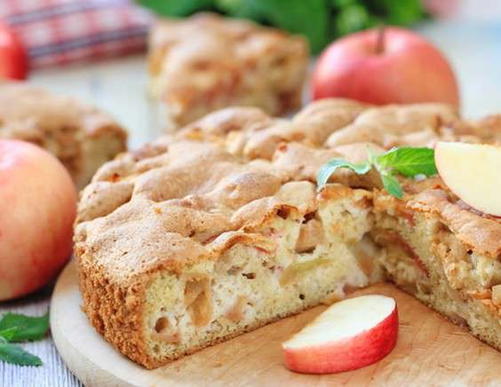

Шарлотка

Пожалуй один из самых популярных пирогов.
Прелесть его в том, что готовится он из самых простых и доступных ингридиентов,
а получается всегда и у всех.
Чем ароматнее будут яблоки, тем вкуснее получится ваш пирог, лучше всего подойдут
кисло-сладкие крепкие плоды.
ИНГРИДИЕНТЫ:
- Мука пшеничная 250 г
- Яйцо 2 шт
- Сахар 250 г
- Яблоки 1 кг
- Разрыхлитель 1 ч.л.
- Соль 0,5 ч.л.
ШАГИ:
- Яблоки очистить и удалить сердцевину, нарезать их на крупные кусочки,
выложить на дно формы, в которой будет запекаться пирог.
- Яйца взбить с сахаром до пышной и густой белой массы, добавить муку, смешанную с солью и разрыхлителем,
аккуратно перемешать и вылить тесто на яблоки.
- Выпекать в разогреой до 170 градусов духовке около часа до золотистого цвета
(деревянная шпажка, вставленная в середину пирога, должна выходитть сухой).